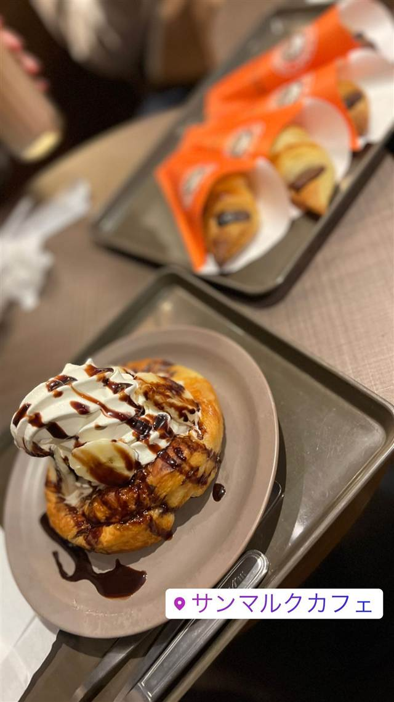

サンマルクカフェ 新宿西口駅前店
渋谷の2号店で生まれた看板商品チョコクロが人気
サンマルクカフェ
サンマルクホールディングスが展開するベーカリーカフェチェーン。1999年に1号店を出店し、渋谷2号店で生まれた看板商品「チョコクロ」で知名度を広げた。店内で焼き上げる焼きたてパンが人気。
TRIVIA
へえ、という話
- チョコクロは2号店の渋谷井の頭通り店で誕生した
- 源流は1989年に岡山で開業したベーカリーレストラン「サンマルク」
| 創業 | サンマルクカフェ1号店は1999年3月、大阪府吹田市にオープン（新宿西口駅前店固有の開店時期は未確認） |
|---|---|
| 系譜 | 運営はサンマルクホールディングス。1989年に岡山市で開いた「ベーカリーレストラン・サンマルク」1号店が源流 |
| 看板 | チョコクロ（チョコレートクロワッサン） |
| こだわり | 店内で焼き上げる自家製パンとドリンクを楽しむセルフサービス式カフェ。看板商品「チョコクロ」は香ばしいクロワッサン生地に板チョコを包んで焼き上げる |
| 予算 | 昼 ～¥999 夜 ～¥999 |
| 定休日 | 無休 |
| 場所 | 新宿西口 東京都新宿区西新宿1-4-2 141ビル2F |
| 注意 | セルフサービス式 |
食べたもの：チョコクロ
NEARBY
近い店・同じ系統の店
-
 カフェ 白金台
Cafe La Boheme 白金（カフェ ラ・ボエム 白金）
明太子パスタを最初に出した、お城のような一軒家イタリアン
昼 ¥1,000～¥1,999 夜 ¥3,000～¥3,999
カフェ 白金台
Cafe La Boheme 白金（カフェ ラ・ボエム 白金）
明太子パスタを最初に出した、お城のような一軒家イタリアン
昼 ¥1,000～¥1,999 夜 ¥3,000～¥3,999
- 写真なし カフェ 北大路駅 大仙院 床の間と玄関が日本最古の国宝、千利休が秀吉に茶を献じた書院
-
 カフェ 江ノ電長谷駅
Venus Cafe（ヴィーナスカフェ）
稲村ジェーンのモデルになった、テキサス&メキシコ仕込みのハンバーガー
昼 ¥2,000～¥2,999 夜 ¥2,000～¥2,999
カフェ 江ノ電長谷駅
Venus Cafe（ヴィーナスカフェ）
稲村ジェーンのモデルになった、テキサス&メキシコ仕込みのハンバーガー
昼 ¥2,000～¥2,999 夜 ¥2,000～¥2,999
-
 カフェ 表参道駅
i2 cafe (アイツーカフェ)
フルーツサンド店の姉妹店が出す、オーブン焼きのダッチベイビー
昼 ¥2,000～¥2,999 夜 ¥2,000～¥2,999
カフェ 表参道駅
i2 cafe (アイツーカフェ)
フルーツサンド店の姉妹店が出す、オーブン焼きのダッチベイビー
昼 ¥2,000～¥2,999 夜 ¥2,000～¥2,999
-
 カフェ 北谷
cafe and fruits BUNBUN
沖縄の珍しい果物を使うワッフルやパフェ、余りは冷凍しフードロス削減
昼 ¥1,000～¥1,999 夜 ¥1,000～¥1,999
カフェ 北谷
cafe and fruits BUNBUN
沖縄の珍しい果物を使うワッフルやパフェ、余りは冷凍しフードロス削減
昼 ¥1,000～¥1,999 夜 ¥1,000～¥1,999
-
 カフェ 白金高輪駅
THE VEGEBOND CAFE
群馬・高崎の農園の野菜を加熱せず搾るジュース・スムージー専門店
昼 ～¥999 夜 ¥1,000～¥1,999
カフェ 白金高輪駅
THE VEGEBOND CAFE
群馬・高崎の農園の野菜を加熱せず搾るジュース・スムージー専門店
昼 ～¥999 夜 ¥1,000～¥1,999